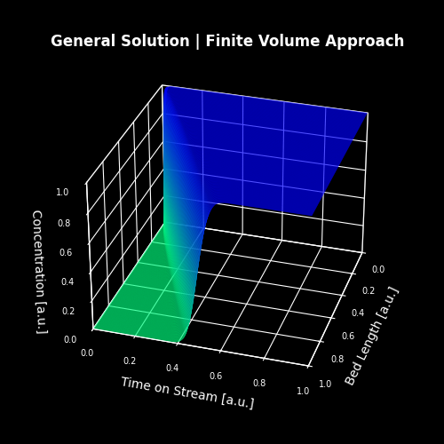
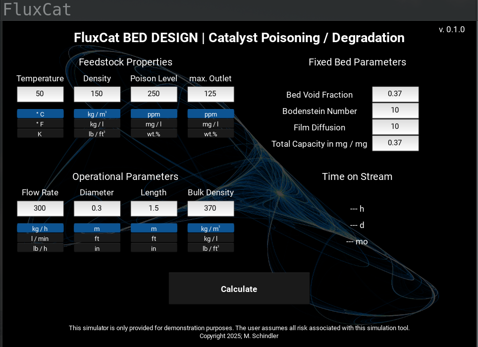

FluxCat | Predictive Simulation Tool for Industrial Catalytic Systems
FluxCat is a Python-based simulation suite designed to model the degradation and breakthrough behavior of packed-bed reactors. While the application serves the chemical industry, the core of the project is a numerical solver that transforms complex physical parameters into predictive maintenance insights.
Technical Implementation
Numerical Core:
The simulation is powered by a Finite Volume Method (FVM) implemented in Python. It solves the advection-dispersion equation using upwind differencing to ensure stability and incorporates a film-diffusion correction for higher accuracy. Stability & Accuracy: To prevent numerical oscillations and ensure convergence, I implemented a Flux-Limiter, allowing for stable simulations even under steep concentration gradients.

Data Pipeline:
The tool features a robust input pipeline that handles high-dimensional process data (temperature, flow rates, geometry, and Bodenstein numbers), automatically normalizing all inputs to SI units before passing them to the solver.
Frontend:
The user interface was built with Kivy, providing an intuitive way for operators to perform parametric studies and visualize the "time-to-failure" (breakthrough point) of the catalyst bed.

Impact:
By quantifying the catalyst's effective lifespan, FluxCat transforms raw physical data into actionable operational intelligence. It allows for the optimization of maintenance cycles and reduces unplanned downtime through high-fidelity predictive modeling of the adsorption process.
GitHub: github.com/markus-schindler/FluxCat